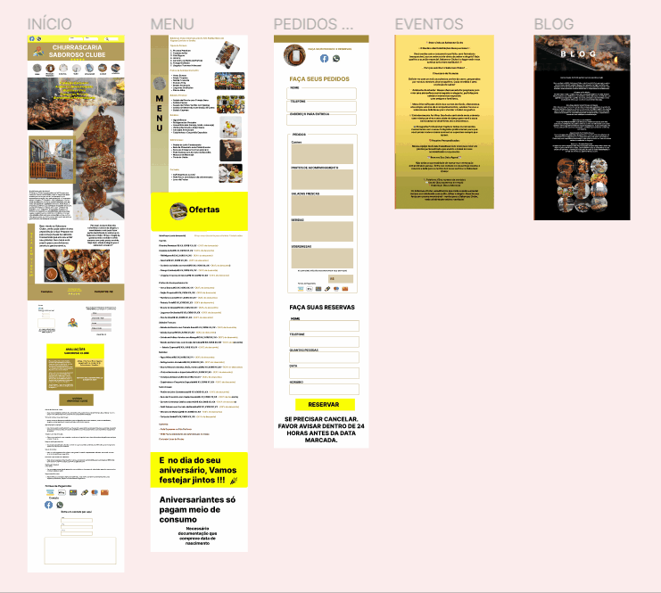
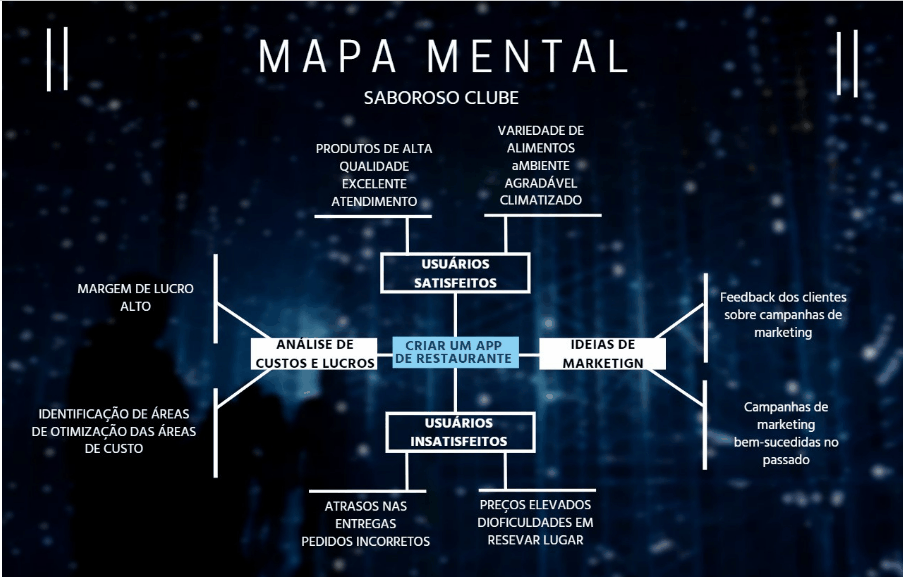
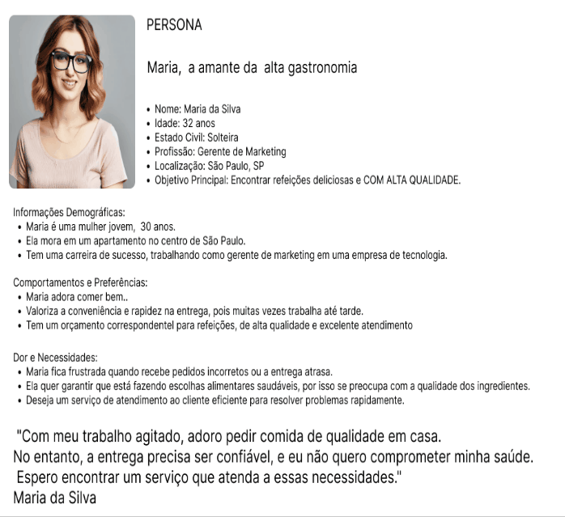
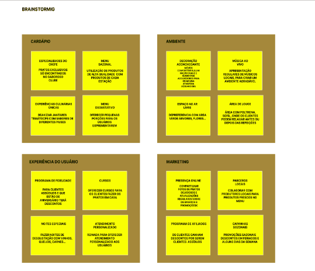
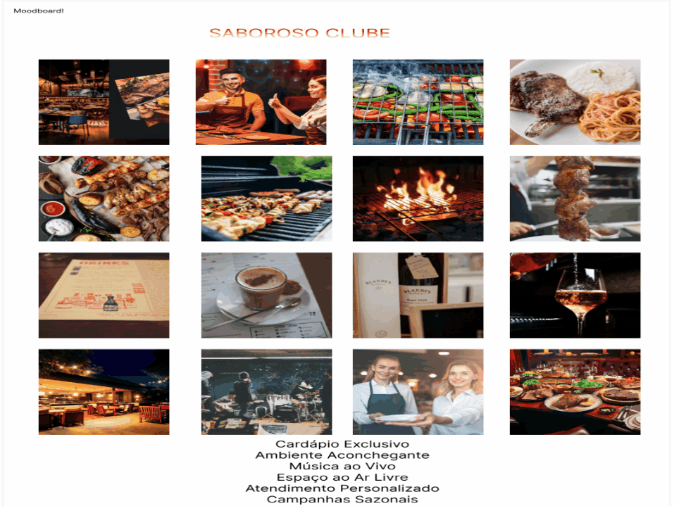
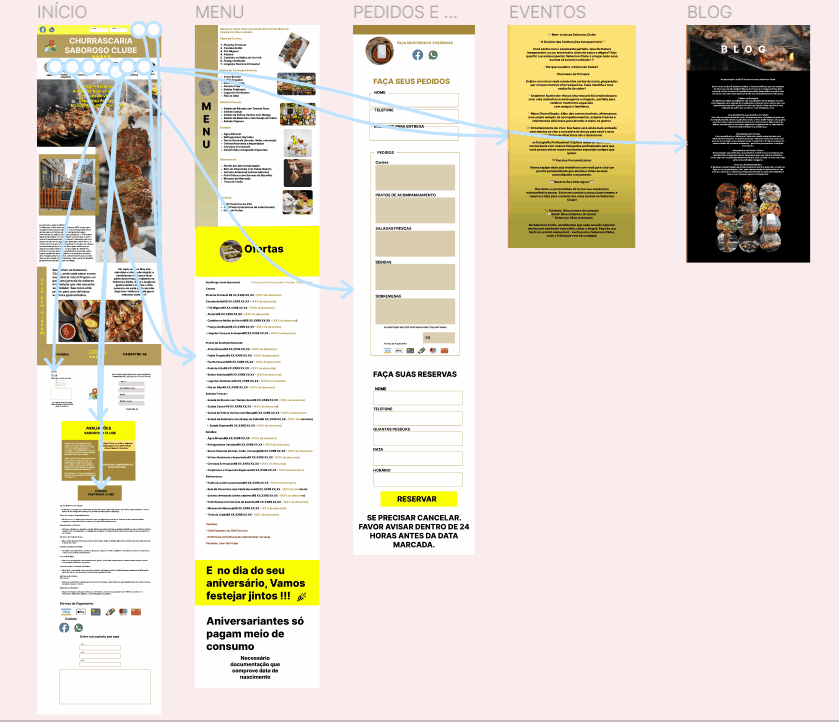
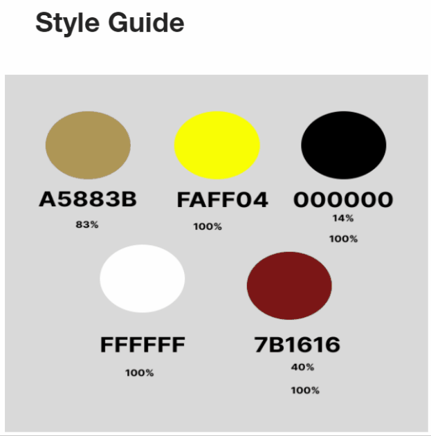

Como utilizamos o UX Design para atrair clientes para a Churrascaria Saboroso Clube
O problema do projeto: Criar uma funcionalidade na conta do usuário para que ele possa encontrar seus pratos favoritos, se alimentando com produtos de alta qualidade.
O Processo de Pesquisa
O cenário atual
Inicialmente, precisei conhecer o cenário em que iria atuar. Para isso elaborei uma Desk Research, pesquisei sites existentes na internet sobre os restaurantes da mesma categoria. Segue alguns dos sites:
A empresa e seus produtos:
O Saboroso Clube teve seu início em 2012 como uma modesta churrascaria familiar, mas ao longo dos anos, evoluiu para se tornar um dos restaurantes mais renomados da região. Seu prato principal, o "Churrasco Gaúcho Supremo", é amplamente considerado o carro-chefe do estabelecimento e cativa a clientela com seu sabor excepcional e qualidade premium. Além disso, o restaurante oferece uma variedade de opções de carnes, acompanhamentos e vinhos finos para satisfazer os paladares mais exigentes. A reputação do Saboroso Clube é marcada por sua hospitalidade calorosa e pela busca constante pela excelência na culinária, criando uma relação única com seus consumidores que o veem não apenas como um restaurante, mas como um destino gastronômico de destaque na cidade.
Fogo de Chão
Fogo Forte
Para esta pesquisa fiz uso das palavras-chaves sobre o assunto (churrascaria, churrasco, restaurante alto padrão…)
Aspectos relacionados ao mercado:
O mercado de restaurantes no Brasil é altamente diversificado e competitivo, refletindo a rica cultura gastronômica do país. No entanto, o Saboroso Clube conseguiu estabelecer uma posição de destaque na indústria de churrascarias premium. Enquanto diversos restaurantes competem no cenário culinário brasileiro, aqueles especializados em churrasco têm se destacado. Entre os principais concorrentes do Saboroso Clube estão a "Carne Nobre Grill" e o "Picanha Dourada", que também se concentram em oferecer experiências gastronômicas de alta qualidade.
Embora o mercado de churrascarias seja competitivo, o Saboroso Clube se diferencia por sua abordagem única e seus pratos exclusivos. Não há uma única empresa líder clara nesse nicho, mas o Saboroso Clube é amplamente conhecido por sua consistente qualidade de carnes grelhadas e seu ambiente acolhedor. Os clientes percebem o Saboroso Clube como local que oferece não apenas refeições excepcionais, mas também uma experiência gastronômica autêntica que celebra a tradição do churrasco brasileiro.
Perfil dos usuários:
O Saboroso Clube atrai uma base de usuários diversificada, mas com alguns traços predominantes. Em relação à classe social, o restaurante é mais frequentado por pessoas das classes A e B, representando 65% dos clientes. Isso se deve em parte a reputação de qualidade premium e ao custo um pouco mais elevado em comparação com restaurantes de churrasco mais comuns.
Em termos de faixa etária, o Saboroso Clube atrai principalmente adultos jovens e de meia idade, com idades variando entre 25 e 55 anos de idade, sendo a maioria dos clientes na faixa dos 30 aos 45 anos. Essa faixa etária é atraída pela combinação de qualidade da comida e do ambiente agradável.
Quanto à localização dos usuários, eles estão principalmente localizados em centros urbanos e áreas metropolitanas, onde o restaurante tem presença física. A maioria dos usuários, são moradores da própria cidade ou cidades vizinhas, tornando o Saboroso Clube uma opção popular para ocasiões especiais e jantares em grupo.
Os principais hábitos de consumo dos clientes do Saboroso Clube incluem a apreciação de boa comida, o gosto por experiências gastronômicas únicas e o desejo de desfrutar de momentos especiais em restaurantes. Muitos clientes veem o Saboroso Clube como um local para celebrações, encontros românticos e confraternizações com amigos e familiares. O que contribui para a sua reputação de não apenas oferecer refeições excepcionais, mas também memórias inesquecíveis.
Sobre o Saboroso Clube Com quem foi feita a pesquisa?
Pessoas que visitam o restaurante "Saboroso Clube" regularmente. Perguntei sobre suas experiências, pratos favoritos e motivos para escolher este restaurante.
Perguntei para clientes que visitavam o restaurante pela primeira vez, suas impressões, o que o atraiu e se deseja voltar. Entrevistados que atuam como críticos de comida, perguntei sobre sua opinião profissional, sobre a qualidade da comida, o serviço, a decoração, etc.
Para adicionar uma perspectiva interna, fiz entrevista com pessoas que sejam amigos ou familiares dos proprietários do restaurante "Saboroso Clube" para obter insights sobre a gestão e o ambiente.
Entrevistei especialistas em gastronomia para discutir tendências culinárias, pratos populares e como o restaurante "Saboroso Clube" se compara a outros estabelecimentos.
Moradores locais, como eles veem com restaurante o impacto no local
Qual o propósito que está por trás desta pesquisa?
Avaliação da satisfação do cliente: Determinar como os usuários percebem a qualidade da comida, o atendimento ao cliente e a experiência geral no restaurante "Saboroso Clube".
Descobrir áreas em que os usuários acreditam que o restaurante "Saboroso Clube" pode melhorar, seja no cardápio, na atmosfera ou em outros aspectos, e como isso afeta sua decisão de retornar.
Desenvolvi perfis dos clientes, identificando seus gostos, preferências culinárias e motivações para escolher o restaurante.
Comparei o restaurante "Saboroso Clube" com restaurantes concorrentes e determinei como ele se destaca ou se posiciona no mercado de comida.
Avaliei como o restaurante afeta a comunidade em termos de emprego, atraindo visitantes e contribuindo para a economia local.
Onde a coleta de dados foi feita?
Online com questionário tipo survey, e presencialmente na churrascaria Saboroso Clube e WhatsApp e webcam.
Quando a pesquisa foi realizada?
Durante o mês de setembro do ano atual.
Quem fez a pesquisa ?
Sandra Schmittel
De que forma a pesquisa foi realizada ?
Questionário Online com Google Forms
A escolha do Google Forms para a pesquisa sobre o restaurante "Saboroso Clube" foi baseada em sua praticidade e escalabilidade. O Google Forms é uma ferramenta de pesquisa online amplamente acessível e fácil de usar. Essa ferramenta permite criar um questionário rapidamente e coletar respostas de um grande número de "usuários" de forma eficiente. Além disso, os resultados podem ser facilmente compilados e analisados digitalmente, tornando-o uma escolha prática para reunir dados e criar uma narrativa baseada em respostas que atinjam os objetivos da pesquisa. Pesquisa de vídeo webcam, whatsapp, para poder observar os gestos faciais dos usuários enquanto respondem às perguntas. E pesquisa presencial na Churrascaria Saboroso Clube, para ter contato direto com os usuários.
MAPA MENTAL DO SABOROSO CLUBE




Mapa do Site
Prototipação

Caso de Teste - Avaliação da Usabilidade do Saboroso Clube
RESULTADO DO TESTE DE USABILIDADE DA CHURRASCARIAS SABOROSO CLUBE
NAVEGAÇÃO BÁSICA
Todos os participantes conseguiram acessar o site do Saboroso Clube a partir de uma pesquisa no Google sem dificuldades. Durante a exploração da página inicial e das categorias de receitas, a maioria dos usuários conseguiram encontrar uma receita da sua escolha em menos de 5 minutos. No geral, a navegação foi considerada intuitiva.
BUSCA DE RECEITAS
A função de pesquisa foi eficaz,com todos os participantes conseguindo encontrar uma receita de churrasco sem problemas.
INSCRIÇÃO COMO MEMBRO
A inscrição como membro do Saboroso Clube foi concluída com êxito para todos os participantes.
O processo de inscrição foi considerado simples e direto, com as informações necessárias claramente indicadas. Os pedidos antes entregues errados ou com atraso, foram solucionados.
FEEDBACK SOBRE USABILIDADE
Todos os usuários conseguiram encontrar a seção de contatos no site e enviaram uma mensagem com impressões sobre a usabilidade do site.
METAS PARA MELHORAR E EXPERIÊNCIA DOS USUÁRIOS
AUMENTAR A RETENÇÃO DE USUÁRIOS:
O tempo médio de permanência no site aumentou 15% após as melhorias de usabilidade.
MELHORAR A CONVERSÃO
A taxa de conversão de visitantes em assinantes é de 10% após a implementação das melhorias.
AUMENTAR ENGAJAMENTO:
O número de comentários por postagem aumentou 20% indicando um maior envolvimento dos usuários.
MELHORAR A SATISFAÇÃO DO CLIENTE
As pesquisas de satisfação mostram um aumento de 12% na satisfação geral dos clientes.
REDUZIR O TEMPO DE CARREGAMENTO:
O tempo médio de carregamento da página diminuiu em 25% resultando em uma experiência mais rápida.
AS ENTREGAS ATRASADAS OU PEDIDOS ERRADOS, NÃO ACONTECEM MAIS:
Com vários meios de contato e o pessoal da equipe Saboroso Clube requalificado este erro não foi mais cometido.
DIFICULDADE DE RESERVAS:
O Saboroso Clube foi restaurado contando agora com um espaço amplo o que diminui a espera nas reservas e o atendimento nos canais de comunicação, estão sempre a disposição
O TESTE DE USABILIDADE DO SABOROSO CLUBE CHURRASCARIA FOI BEM-SUCEDIDO
As melhorias recomendadas no FEEDBACK SOBRE USABILIDADE serão implantadas para aprimorar ainda mais o site e atender as metas estabelecidas.
RESULTADO DO TESTE DE USABILIDADE DA CHURRASCARIA SABOROSO CLUBE FOI BEM-SUCEDIDO. AS MELHORIAS RECOMENDADAS SERÃO IMPLEMENTADAS PARAnbsp; PARA APRIMORAR AINDA MAIS O SITE Enbsp; ATENDER AS METAS ESTABELECIDAS.
Style Guide

Para ver Projeto Clique abaixo
CHURRASCARIA SABOROSO CLUBE